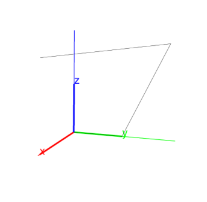

14.9.4 Polygonal lines in space: open_polygon
See Section 13.10.4 for polygonal lines in the plane.
The open_polygon command creates polygonal lines in space.
-
open_polygon takes one argument:
S, a sequence of points.
- open_polygon(S)returns and draws the polygon line whose
vertices are the given points.
Example
Input:
open_polygon(point(0,0,0),point(0,1,0),point(0,2,2),point(1,0,2))
Output:
